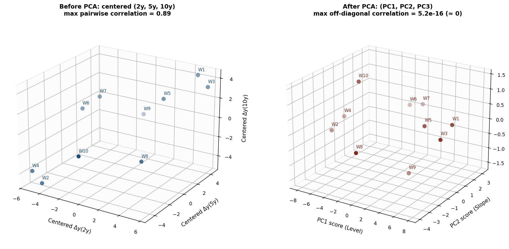
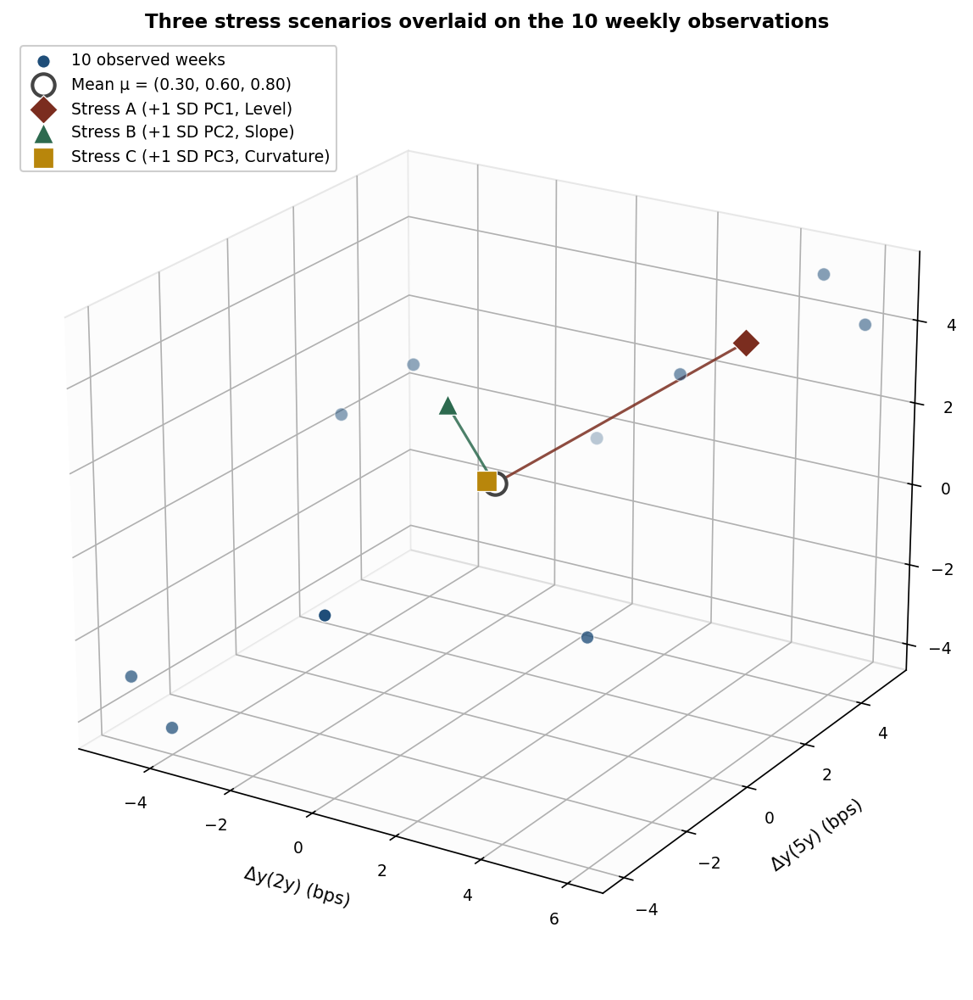
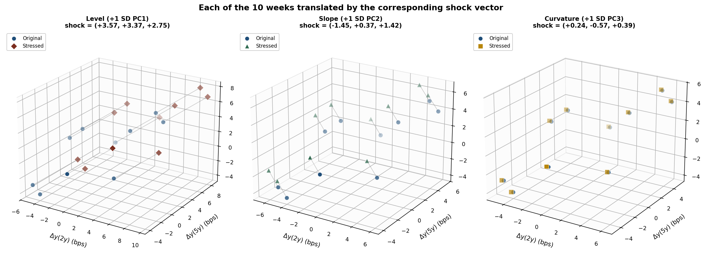

PCA on Yield Curves: a 10-week, 3-tenor example
Article 2
This is the second article of a two-article series on PCA for yield curves. The series introduction (covering the stress-testing problem PCA addresses, the eigenvalue derivation, and why the procedure maximises variance) is in Article 0. The previous article, Article 1, worked through PCA on a deliberately small 2-tenor, 5-day example where the rotation could be drawn explicitly. This article extends the machinery to three tenors, where the canonical three-factor Level / Slope / Curvature decomposition first appears.
Article 1 walked through PCA on two tenors and five days. That example was small enough that every number could be checked by hand and the rotation could be drawn on a single page. It had one structural limit: with only two original variables, PCA can only produce two principal components, and the second is forced by orthogonality to be perpendicular to the first. The famous three-factor Level / Slope / Curvature decomposition of Litterman and Scheinkman (1991) was therefore impossible to demonstrate. Article 1 stated this honestly and stopped.
This article fills that gap. The dataset is 10 weeks of changes (in basis points) on three tenors — a “2y”, a “5y”, and a “10y” — chosen to produce a clean three-factor structure with variance shares close to the textbook 85% / 12% / 3%. Everything else is the same as before: forward decomposition via the covariance matrix, scores as projections onto eigenvectors, reverse construction of stress scenarios by adding shock vectors back to the mean. The mathematical foundation for what the procedure is doing — the Lagrangian derivation, the eigenvalue equation, the spectral theorem — is in Article 0 and not repeated here.
A note on the data, made explicit because it matters: the 10 weeks below are hand-engineered to make the L/S/C decomposition come out crisply for pedagogical reasons. The eigenvector sign patterns and variance shares are not noisy. On real yield curve data the same patterns appear but with more measurement noise and occasional cross-loadings; the structure I am showing is what practitioners expect to see in long samples, not what they always see in any individual 10-week window. PCA on real Taiwan TWD data — with the noise, cross-loadings, and comparison to Nelson-Siegel basis functions that a serious application requires — is the subject of Article 3 of the DNS series (forthcoming).
The raw data
The 10 weekly changes:
| Week | Δy(2y) (bps) | Δy(5y) (bps) | Δy(10y) (bps) |
|---|---|---|---|
| W1 | +5 | +5 | +5 |
| W2 | −4 | −4 | −4 |
| W3 | +6 | +5 | +4 |
| W4 | −5 | −4 | −3 |
| W5 | +3 | +3 | +3 |
| W6 | −3 | 0 | +2 |
| W7 | −2 | +1 | +3 |
| W8 | +3 | 0 | −2 |
| W9 | +1 | +3 | +1 |
| W10 | −1 | −3 | −1 |
The patterns are worth a quick read: W1 / W2 / W5 are near-parallel moves; W3 / W4 add a gentle slope twist on top of a parallel move; W6 / W7 / W8 are steepeners and a flattener; W9 / W10 are curvature moves where the belly (5y) leads. This mix of factor types is what produces the three-factor decomposition that follows.

The sample means are 0.30 bps on the 2y, 0.60 bps on the 5y, 0.80 bps on the 10y. As in the 2D case, PCA operates on deviations from the mean; the centered data is the raw values minus this vector. The covariance computations in §3 use the centered data.
Extracting the principal components
The sample covariance matrix (using the n − 1 = 9 denominator, matching R’s cov() defaults) is:
\[ \Sigma = \begin{bmatrix} 14.900 & 11.356 & 7.844 \\ 11.356 & 11.822 & 9.578 \\ 7.844 & 9.578 & 9.733 \end{bmatrix} \]
Solving det(Σ − λI) = 0 gives three eigenvalues and three corresponding eigenvectors:
| Component | Eigenvalue | Eigenvector | Variance share |
|---|---|---|---|
| PC1 (Level) | 31.66 | [+0.634, +0.599, +0.489] | 86.85% |
| PC2 (Slope) | 4.26 | [−0.702, +0.181, +0.689] | 11.70% |
| PC3 (Curvature) | 0.53 | [+0.324, −0.780, +0.535] | 1.45% |
The three loadings tell the entire story of why these factors are called what they are called.

PC1 is Level. All three loadings are positive and similar in magnitude (+0.63, +0.60, +0.49). A positive PC1 score corresponds to all three tenors rising, with the short end rising slightly more than the long end. This is what fixed-income practitioners mean by a “parallel shift” — approximately parallel, not literally parallel, because the loadings are not exactly equal.
PC2 is Slope. The 2y loading is large and negative (−0.70), the 10y loading is large and positive (+0.69), and the 5y loading is small (+0.18). A positive PC2 score corresponds to the short end falling and the long end rising — a steepener. A negative PC2 score is a flattener. The belly tenor is approximately a pivot point. This is the textbook slope signature.
PC3 is Curvature. The 2y and 10y loadings are positive (+0.32, +0.54), the 5y loading is large and negative (−0.78). A positive PC3 score corresponds to the ends rising while the belly falls — a “butterfly” move where the curve becomes more bowed. A negative PC3 score is the opposite (“butterfly down” or de-bowing).
The variance shares 86.85% / 11.70% / 1.45% are a clean L/S/C hierarchy. In real-world yield curve data with longer samples and more tenors, Litterman and Scheinkman (1991) documented similar three-factor structure explaining roughly 95% of variance in U.S. Treasury yields; the canonical published proportions are roughly 90% / 7% / 2%. The toy sample above happens to land close to that.
Two conventions affect reproducibility. Eigenvectors are defined up to sign, so software may return any of the eigenvectors above with all signs flipped — the result is the same direction in space and does not change any downstream analysis. The conventions adopted here are: PC1’s average loading is positive, PC2’s long-end loading is positive (so positive PC2 = steepener), and PC3’s belly loading is negative (so positive PC3 = ends-up butterfly). The covariance estimator uses the n − 1 = 9 denominator, matching R’s defaults; numpy.cov requires ddof=1 to match.
Before and after PCA
The forward operation of PCA can be drawn directly. The “before” view is the centered data in (2y, 5y, 10y) space; the “after” view is the same observations re-expressed in (PC1, PC2, PC3) score coordinates.

The titles on the two panels carry the headline result: pairwise correlations between centered tenors are as high as 0.89, while the corresponding correlations between PC scores are zero (to numerical precision). This is exactly what PCA is designed to do — the rotation re-expresses the data in a coordinate system where the new axes are statistically independent (uncorrelated, technically).
PCA as variance-aligned axes
In two dimensions PCA can be visualised as a literal rotation that maximises horizontal variance. In three dimensions the same idea applies, but it cannot be reduced to a single rotation angle — a 3D rotation has three angles, not one. What remains true and visualisable is this: the eigenvectors of the covariance matrix are the variance-aligned axes of the data cloud, drawn through its mean.
The animation below shows the 10-week cloud with the three eigenvector axes drawn through the sample mean, each scaled to ±1 standard deviation of its principal component. The camera orbits around the cloud so the three-dimensional geometry can be seen from multiple angles. The PC1 axis (rust) cleanly traces the long spine of the data; PC2 (green) is the second-longest axis perpendicular to PC1; PC3 (gold) is so short it is almost invisible at the +1 SD endpoint, which is the geometric statement that PC3 explains only 1.45% of variance.

The relative lengths of the three line segments encode the variance hierarchy directly: PC1 is the longest, PC2 is roughly a third its length (since √(11.70/86.85) ≈ 0.37), and PC3 is roughly one-eighth its length (since √(1.45/86.85) ≈ 0.13). The eigenvalues and the visible axis lengths in the animation are the same information rendered two different ways.
The PCA scores
Projecting each week’s centered observation onto the three eigenvectors gives the PCA scores — the coordinates of each week in the (PC1, PC2, PC3) system.
| Week | PC1 (Level) | PC2 (Slope) | PC3 (Curvature) |
|---|---|---|---|
| W1 | +7.669 | +0.393 | +0.340 |
| W2 | −7.829 | −1.124 | −0.376 |
| W3 | +7.815 | −0.998 | +0.129 |
| W4 | −7.974 | +0.267 | −0.164 |
| W5 | +4.225 | +0.056 | +0.181 |
| W6 | −1.867 | +3.034 | +0.041 |
| W7 | −0.145 | +3.202 | +0.121 |
| W8 | −0.014 | −3.933 | −0.156 |
| W9 | +1.979 | +0.082 | −1.538 |
| W10 | −3.861 | −0.981 | +1.423 |
The structure of the table tells the same story as the loading patterns. The big level moves (W1 to W4) have PC1 scores around ±8 and small PC2 / PC3 scores. The pure slope weeks (W6, W7, W8) have small PC1 scores but PC2 scores of ±3. The two curvature weeks (W9, W10) have small PC1 / PC2 scores but the largest absolute PC3 scores in the sample. The decomposition has cleanly separated the three types of move into three orthogonal coordinates.
A direct verification of one row: for W6, the centered observation is (−3.30, −0.60, +1.20). The PC2 score is (−3.30) × (−0.702) + (−0.60) × 0.181 + (1.20) × 0.689 = 2.317 − 0.109 + 0.827 = 3.034. The other entries in the row check the same way.
Reverse construction: building stress scenarios
The forward use of PCA produces scores from observations. The reverse use — the one that matters for stress testing — starts from a hypothetical PC score and projects back to a tenor-space yield change:
\[ \text{Stressed change} = \text{Mean} + (\text{Shock magnitude}) \times \text{Eigenvector} \]
Shock magnitudes are calibrated in standard deviations of the relevant PC. The standard deviations are the square roots of the eigenvalues:
- 1 SD of PC1 (Level) = √31.66 ≈ 5.627 bps
- 1 SD of PC2 (Slope) = √4.26 ≈ 2.065 bps
- 1 SD of PC3 (Curvature) = √0.53 ≈ 0.728 bps
The three standard deviations differ by a factor of roughly 8: Level is about 2.7× larger than Slope, which is about 2.8× larger than Curvature. This automatic scaling is one of the reasons PCA is useful for stress testing — the eigenvalues themselves tell the modeller that “1 SD of curvature” is a much smaller event in bps than “1 SD of level”, without anyone having to choose those scales by hand.
The “1 SD” choice here is for illustration. Real regulatory frameworks use higher percentiles. Solvency II uses 99.5% one-year Value-at-Risk, which is roughly 2.58 SD under a Gaussian assumption. The mechanism is identical; only the multiplier changes.
Scenario A: a level shock (+1 SD on PC1)
Shocking PC1 by +1 SD (5.627) and holding PC2 and PC3 at zero produces:
| Tenor | Mean change | PC1 impact | Stressed change |
|---|---|---|---|
| 2y | +0.30 | 5.627 × 0.634 = +3.57 | +3.87 |
| 5y | +0.60 | 5.627 × 0.599 = +3.37 | +3.97 |
| 10y | +0.80 | 5.627 × 0.489 = +2.75 | +3.55 |
All three tenors rise by roughly 3–4 bps, with the short end rising slightly more than the long end. This is a coherent “parallel up” stress — approximately parallel, in the same approximate sense as the PC1 loadings themselves are approximately equal. The 0.32 bp difference between the 2y and 10y stress impacts reflects the loading taper (+0.634 vs +0.489).
Scenario B: a slope shock (+1 SD on PC2)
Shocking PC2 by +1 SD (2.065) and holding PC1 and PC3 at zero produces:
| Tenor | Mean change | PC2 impact | Stressed change |
|---|---|---|---|
| 2y | +0.30 | 2.065 × (−0.702) = −1.45 | −1.15 |
| 5y | +0.60 | 2.065 × 0.181 = +0.37 | +0.97 |
| 10y | +0.80 | 2.065 × 0.689 = +1.42 | +2.22 |
The 2y falls, the 5y barely moves, the 10y rises — a clean steepener. The 10y-vs-2y spread widens by 2.87 bps relative to the unstressed baseline. This is what a +1 SD slope shock looks like in tenor space: not just “everything rises” but a structurally different curve shape.
Scenario C: a curvature shock (+1 SD on PC3)
Shocking PC3 by +1 SD (0.728) and holding PC1 and PC2 at zero produces:
| Tenor | Mean change | PC3 impact | Stressed change |
|---|---|---|---|
| 2y | +0.30 | 0.728 × 0.324 = +0.24 | +0.54 |
| 5y | +0.60 | 0.728 × (−0.780) = −0.57 | +0.03 |
| 10y | +0.80 | 0.728 × 0.535 = +0.39 | +1.19 |
The ends rise, the belly essentially holds still — a “butterfly” move in which the curve becomes more bowed. The magnitudes are small (the largest impact is +0.57 bps on the 5y) because the curvature standard deviation is small, again reflecting the eigenvalue automatically setting the scale.
The new content in this article relative to the 2D version is the existence of Scenario C. With only two tenors, a curvature shock is not even definable. With three tenors, it exists, has the canonical sign pattern, and its scale is set automatically by the data.
Stresses in the context of the sample
All three stress scenarios can be plotted in the original yield-change space alongside the 10 observed weeks and the sample mean.

The three stress points are not arbitrary positions; each is at the +1 SD endpoint along one of the three PC axes drawn in the rotation animation in §5. The fact that Stress A is visibly far from the mean while Stress C is visibly on top of the mean is the variance hierarchy 86.85% / 11.70% / 1.45% rendered geometrically.
Each observation before and after each shock
The shock vectors that define Scenarios A, B and C are fixed regardless of where they are applied. Adding them to the sample mean produces the three single-point scenarios above. Adding the same vector to each of the 10 observed weeks produces three full clouds of stressed weeks — one cloud per shock — which is the scenario-based stress framework where each historical week is treated as a possible current state.
| Week | Original (2y, 5y, 10y) | +PC1 (Level) | +PC2 (Slope) | +PC3 (Curvature) |
|---|---|---|---|---|
| W1 | (+5.00, +5.00, +5.00) | (+8.57, +8.37, +7.75) | (+3.55, +5.37, +6.42) | (+5.24, +4.43, +5.39) |
| W2 | (−4.00, −4.00, −4.00) | (−0.43, −0.63, −1.25) | (−5.45, −3.63, −2.58) | (−3.76, −4.57, −3.61) |
| W3 | (+6.00, +5.00, +4.00) | (+9.57, +8.37, +6.75) | (+4.55, +5.37, +5.42) | (+6.24, +4.43, +4.39) |
| W4 | (−5.00, −4.00, −3.00) | (−1.43, −0.63, −0.25) | (−6.45, −3.63, −1.58) | (−4.76, −4.57, −2.61) |
| W5 | (+3.00, +3.00, +3.00) | (+6.57, +6.37, +5.75) | (+1.55, +3.37, +4.42) | (+3.24, +2.43, +3.39) |
| W6 | (−3.00, +0.00, +2.00) | (+0.57, +3.37, +4.75) | (−4.45, +0.37, +3.42) | (−2.76, −0.57, +2.39) |
| W7 | (−2.00, +1.00, +3.00) | (+1.57, +4.37, +5.75) | (−3.45, +1.37, +4.42) | (−1.76, +0.43, +3.39) |
| W8 | (+3.00, +0.00, −2.00) | (+6.57, +3.37, +0.75) | (+1.55, +0.37, −0.58) | (+3.24, −0.57, −1.61) |
| W9 | (+1.00, +3.00, +1.00) | (+4.57, +6.37, +3.75) | (−0.45, +3.37, +2.42) | (+1.24, +2.43, +1.39) |
| W10 | (−1.00, −3.00, −1.00) | (+2.57, +0.37, +1.75) | (−2.45, −2.63, +0.42) | (−0.76, −3.57, −0.61) |
The values are constructed entry by entry. For W8 under +PC1: original (3, 0, −2) plus shock (+3.57, +3.37, +2.75) gives (+6.57, +3.37, +0.75). For W8 under +PC2: original (3, 0, −2) plus shock (−1.45, +0.37, +1.42) gives (+1.55, +0.37, −0.58). For W8 under +PC3: original (3, 0, −2) plus shock (+0.24, −0.57, +0.39) gives (+3.24, −0.57, −1.61). The same simple addition produces every other cell.

A consistency check: the mean of the +PC1 stressed cloud is (3.87, 3.97, 3.55), which is exactly the Scenario A point from §7.1. The mean of the +PC2 stressed cloud is (−1.15, 0.97, 2.22), which is Scenario B. The mean of the +PC3 stressed cloud is (0.54, 0.03, 1.19), which is Scenario C. This is mechanical — translating every point by the same vector translates the mean by that vector — but it confirms that the per-week table and the per-scenario tables are saying the same thing from different starting points.
Limitations of this example
The sample is 10 weeks. This is a small sample for estimating a 3×3 covariance matrix — a serious empirical PCA on yield curves would use months or years of data, not weeks. The eigenvalues and eigenvectors above are reasonable for a textbook exposition, but readers should not infer that “PC3 explains 1.45% of variance” or similar specifics generalise to any real dataset. What does generalise is the qualitative L/S/C structure: in nearly every large sample of historical yield curve changes, the three leading principal components have approximately the sign patterns shown in Figure 2.
The data is engineered. As noted in the introduction, the 10 weeks were chosen to produce a clean three-factor decomposition. On real-world data the loadings have measurement noise, the variance shares vary across periods, and occasionally PC2 and PC3 can mix or swap order. The exposition above shows the structure that practitioners expect; a real dataset would show that structure with imperfections.
The article does not address an important real-world question: PCA on yield changes versus PCA on yield levels. The two procedures produce different eigenvectors and different interpretations. The L/S/C decomposition is a property of changes, not levels. The Litterman–Scheinkman analysis, and virtually all regulatory frameworks built on it, operate on changes. This article follows that convention without further discussion.
Stresses as yield-curve transformations
So far the shocks have been described as vectors in (2y, 5y, 10y) coordinate space, and the figures showing them have used 3D scatter plots. That treatment is mathematically clean but pedagogically indirect — it asks readers to translate from coordinate triples back into “what does the actual yield curve look like.” This section closes that gap by visualising the shocks as curve transformations.
The PCA itself is unchanged: the article still works on yield changes, the eigenvectors and stress vectors are exactly as computed above. The only addition is an arbitrary baseline yield-level curve, used purely to anchor the visualisation. The baseline values are not derived from the data and have no relationship to the PCA; a different baseline would shift the curves bodily up or down but would not change any conclusion about the shocks themselves.
The illustrative baseline is:
| Tenor | Baseline yield (%) |
|---|---|
| 2y | 2.00 |
| 5y | 2.50 |
| 10y | 3.00 |
The “stressed mean” yield level at each tenor is then baseline + mean change + shock impact, all converted to consistent units. With the baseline at percentage scale (2.00, 2.50, 3.00) and the mean change plus shock impact in basis points, this is a small adjustment — roughly 3–4 bps at most.

The left panel says one important thing the article has not stated before: a 1 SD shock is small in absolute terms. The four lines nearly overlap because three or four basis points is a small movement relative to the 200–300 bps baseline level. The right panel is where the shock structure becomes visible. The three coloured lines on the right are exactly the L/S/C signatures from the bar chart in §3, re-drawn as curves over tenor: PC1 is approximately flat-positive (parallel-up shift); PC2 ascends from negative at the short end to positive at the long end (steepener); PC3 has the characteristic ∨-shape with the belly below the ends (butterfly).
The per-week version of the same picture extends the cloud-translation idea from §8 to curve-space. For each shock, the 10 baseline weekly level curves (constructed as baseline + observed change) are shown in faint blue, and the same 10 weeks after the shock is added are shown in the shock’s colour. The y-axis is auto-scaled per panel so the shock — which is only 3-4 bps on a baseline of 200-300 bps — remains visible.

The L/S/C signatures are now visible per week rather than only on the mean, and in the same units (percent yield) that practitioners actually read curves in. Every blue curve has a coloured counterpart that differs from it by exactly the shock vector — uniformly across all weeks, which is the defining property of a factor shock. The y-axis is in percent and the visible separations between blue and coloured curves are the few-bps shocks rendered at level scale.
The honest visual cost of plotting in level rather than change space is that the shock is much smaller than the natural week-to-week spread of the baseline curves. The level-space view answers “what does the stressed yield curve look like next to the baseline curve?”, which is what a trader or risk manager would actually compare. The bps-axis view of the same shocks — exactly the L/S/C signatures from the bar chart in §3 — is shown in the right panel of Figure 7 above.
A note worth stating explicitly: this section visualises changes on top of an invented level baseline. It is not PCA on yield levels. PCA on levels is a different procedure, produces different eigenvectors, and is methodologically inappropriate for stress testing — as noted in § 10 below. The visualisation here is a convenience for reading the shocks as curve shapes, not a recommendation for the underlying technique.
A 99.5% VaR stress example
Every stress shown so far has been at the +1 SD severity. This is illustrative but not what any regulator asks for. Solvency II and most modern capital regimes work in terms of 99.5% one-year Value-at-Risk — the loss that would not be exceeded in 199 years out of 200.
Under a Gaussian assumption, the 99.5% one-year VaR corresponds to a multiplier of \(z_{0.995} = 2.576\) standard deviations. Replacing the +1 SD multiplier from §8 with k = 2.576 leaves the PCA machinery untouched and rescales the shock vectors by exactly the same factor. This is the central reason PCA is convenient for capital modelling: changing severity is one multiplier, not a re-derivation.
Regulatory stress testing is two-sided. A bond portfolio that is hurt by a rate rise is helped by a rate fall, and vice versa; capital requirements consider the worst case across both directions. The same logic extends to slope and curvature. We therefore construct six scenarios at the 99.5% severity — one for each direction on each of the three PCs.
The shock magnitudes are:
| Scenario | k × SD | Per-tenor impact (2y, 5y, 10y) bps |
|---|---|---|
| +k SD PC1 (Level up) | +14.49 bps | (+9.20, +8.68, +7.08) |
| −k SD PC1 (Level down) | −14.49 bps | (−9.20, −8.68, −7.08) |
| +k SD PC2 (Steepener) | +5.32 bps | (−3.73, +0.97, +3.66) |
| −k SD PC2 (Flattener) | −5.32 bps | (+3.73, −0.97, −3.66) |
| +k SD PC3 (Curvature up) | +1.87 bps | (+0.61, −1.46, +1.00) |
| −k SD PC3 (Curvature down) | −1.87 bps | (−0.61, +1.46, −1.00) |
Applied to the same baseline (2.00, 2.50, 3.00) % from §10 and the sample mean drift, the resulting stressed yield-curve levels are:
| Scenario | Stressed (2y, 5y, 10y) % |
|---|---|
| Baseline + mean change | (2.003, 2.506, 3.008) |
| +k SD PC1 (Level up) | (2.095, 2.593, 3.079) |
| −k SD PC1 (Level down) | (1.911, 2.419, 2.937) |
| +k SD PC2 (Steepener) | (1.966, 2.516, 3.045) |
| −k SD PC2 (Flattener) | (2.040, 2.496, 2.971) |
| +k SD PC3 (Curvature up) | (2.009, 2.491, 3.018) |
| −k SD PC3 (Curvature down) | (1.997, 2.521, 2.998) |

Three observations make this figure useful for capital modelling intuition.
First, the Level scenarios dominate the spread of outcomes. The two rust curves are the highest and lowest of the six at every tenor. This is the geometric reflection of PC1’s 86.85% variance share: a 99.5% level shock is roughly 2.7 times the magnitude of a 99.5% slope shock, and roughly 7.7 times the magnitude of a 99.5% curvature shock, because the standard deviations themselves are in that ratio. Capital requirements driven by these shocks would be dominated by interest-rate level risk, with slope and curvature contributing small but non-trivial increments.
Second, the Slope scenarios pivot the curve, the Curvature scenarios bow it. The +k SD steepener (green solid) sits below the baseline at the 2y but above it at the 10y — the curve tilts. The +k SD curvature-up (gold solid) sits above the baseline at the 2y and 10y but below it at the 5y — the curve becomes more bowed. These are not just shifts in level; they are structurally different yield-curve shapes, and a portfolio’s sensitivity to each can differ even at the same notional duration.
Third, the shocks remain modest in absolute terms even at 99.5% severity. The widest spread at any tenor is about 18 bps at the 2y between Level-up and Level-down. On a yield curve sitting at 2-3%, this is small relative to historical regime changes. The 99.5% VaR severity at this calibration is closer to “a bad week” than to “a catastrophic year” — a consequence of the small data sample. A real PCA calibrated on years of daily yield changes would produce standard deviations roughly 10-50 times larger than these, and the 99.5% VaR shocks would be correspondingly larger.
A reader extending this to a real capital calculation should be aware of three places this example is too simple. Real curve datasets have fatter tails than Gaussian, so the 2.576 multiplier under-states severity at the 99.5% level; practitioners often use empirical historical quantiles or copulas to capture this. Real datasets also have many more than three tenors, so the principal-component structure is richer (a “second curvature” or fourth factor often appears with 1-2% of variance, as Alexander (2008) discusses). And real regulatory regimes have their own prescribed shocks — Solvency II’s interest rate sub-module specifies upward and downward shocks by tenor that are not generally aligned with PCA factor directions. The PCA-based approach above is closer to what an internal-model insurer or bank might use under Schlütter (2017) than to a standard formula directly.
What changes when going from 2 tenors to many tenors
The mechanism shown here extends without modification to 10 or 60 tenors. What changes:
- The covariance matrix becomes K × K rather than 3 × 3. The eigendecomposition still produces K eigenvalues and K eigenvectors; the first three almost always carry the L/S/C interpretation; later components capture progressively finer structure (the “fourth factor” is sometimes a second curvature, sometimes a shorter-end tilt; Alexander (2008) discusses these).
- The variance hierarchy gets more compressed. With many tenors, PC1 typically explains 70–80% rather than 86%, PC2 explains a larger fraction (perhaps 15%), and PC3 captures a smaller share (1–3%). The total captured by the top three components stays in the 90%+ range.
- The eigenvector signs of PC2 and PC3 stay recognisable as Slope and Curvature, but the exact loadings depend on the choice of tenor grid. PCA does not know which tenors are “short”, “middle” or “long” — it discovers that the data is organised that way.
- Stress testing in practice rarely uses the +1 SD multiplier shown here. The choice of multiplier is a regulatory and modelling decision, not a property of PCA. Hull (2018) has worked examples of the conversion between PCA scores and N-standard-deviation stress scenarios for VaR calculations.
The earlier Article 1 showed the mechanism in a setting where every number was hand-verifiable. This article shows the same mechanism in the smallest setting where the L/S/C interpretation actually appears. For PCA on real yield curve data — many tenors, years of observations, attention to the cross-sectional smoothing required to get sensible eigenvectors — see Article 3 of the DNS series (forthcoming), which applies the same machinery to Taiwan TWD yield curves and compares the empirical loadings to Nelson-Siegel basis functions. The series references — Litterman and Scheinkman (1991), Hull (2018), Tuckman and Serrat (2022), Alexander (2008) — are consolidated in Article 0.
Source code for the figures in this article is available in the repo.
Comments and corrections welcome.